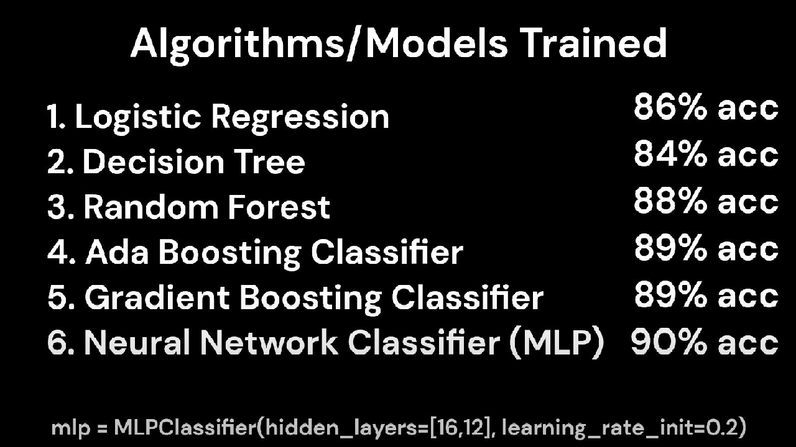

For my machine learning class, I trained machine learning models that classified who the winner was in a match between two people of Super Smash Brothers Melee. This project was started and finished from the data collection and data cleaning process, to the training of models. The biggest part of this project for me was getting into the nitty gritty of data collection and cleaning. The data comes from the replays at the B-Town Beatdown Tournament for Super Smash Brothers Melee.
While parsing through the replays and getting a feel for the dataset, I found that a lot of the replays were dead replays. I had write a few functions to filter out replays that I found had either incomplete data or were not fully completed matches between two players. The following is an example of a filtering function I used:
def is_real_match(game_instance):
zero_percent_stocks = [item for item in game_instance['stats']['stocks'] if item['endPercent'] == 0]
return len(zero_percent_stocks) > 2
when passed in data of a match, it just returns false when there are more than 2 zero percent stocks. A zero percent stock is when someone loses a stock with zero percent. This usually only happens during warmups and so I filtered them out.
The training of the models were a lot simpler of a process. It involved hyperparameter tuning and data preprocessing which is a bit less complicated than generating a new dataset and processing 5GB worth of replays. The models I used are shown in the below image. Unsurprisingly the neural network performed the best, but by very little. Ensemble classifiers seemed to perform extremely well and they took way less computational power to train. From the ensemble classifiers, I was able to determine that a higher inputs per minute correlated to the a higher chance of winning.
